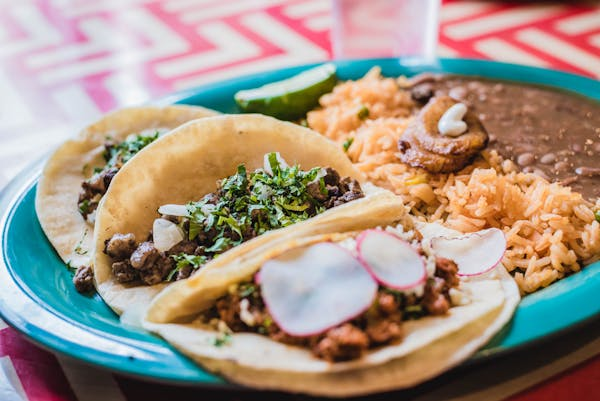

Back to Home
Tacos

Ingredients
- 8 small corn tortillas
- 1 lb ground beef or chicken
- 1 tbsp taco seasoning
- 1/2 cup chopped onion
- 1/2 cup chopped tomatoes
- 1/2 cup shredded lettuce
- 1/2 cup shredded cheese
- Sour cream, salsa, or guacamole (optional)
Instructions
1. Heat a skillet over medium heat and cook ground meat until browned.
2. Add taco seasoning and a splash of water, stir and simmer for 5 mins.
3. Warm the tortillas on a dry pan for a few seconds each side.
4. Fill each tortilla with meat, then top with lettuce, tomato, cheese.
5. Add sour cream, salsa, or guacamole if desired.
6. Serve immediately and enjoy warm.